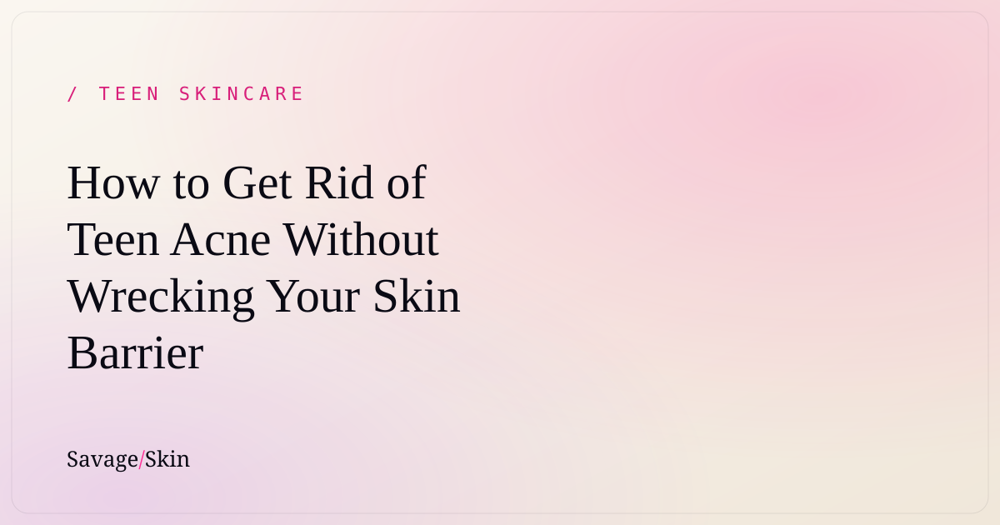

How to Get Rid of Teen Acne Without Wrecking Your Skin Barrier

If you've been throwing every harsh product you can find at your breakouts and your skin is still mad — this is for you. The secret to clearing teen and hormonal acne isn't going scorched-earth. It's the opposite: calm the skin down, treat the acne gently and consistently, and protect your barrier the whole time. Aggressive routines feel productive but usually make acne last longer. Here's the plan that actually works.
Why "drying it out" backfires
The instinct with a breakout is to attack it — scrub harder, layer on every acid, dry everything out. But acne isn't a hygiene problem and your skin isn't dirty. Acne happens because of a mix of excess oil, clogged pores, bacteria, and inflammation — a lot of it driven by hormones you can't control.
When you strip and over-dry your skin, you damage your skin barrier (the protective layer that keeps moisture in and irritants out). A damaged barrier gets inflamed, produces more oil to compensate, and — plot twist — breaks out more. So the harsh routine that's "supposed" to clear you up is often the thing keeping you broken out. Wild, but true.
The gentle-but-effective acne plan
Step 1 — Cleanse gently, twice a day
Use a non-stripping cleanser morning and night. If your face feels tight and squeaky after, it's too harsh. A gentle cleanser like our Clean Start Cleanser removes oil and buildup without trashing your barrier. Don't scrub — your hands are enough.
Step 2 — Treat the acne (pick ONE active to start)
Choose a single acne active and stick with it:
- Salicylic acid — best for blackheads, whiteheads, clogged pores.
- Benzoyl peroxide (2.5%) — best for red, inflamed pimples.
Start 2–3x a week, build up as your skin tolerates it. Using both, daily, from day one is how you end up irritated. For deeper detail on which active fits you, read our honest guide to skincare actives for teens.
Step 3 — Moisturize (non-negotiable)
This is the step acne-prone people skip, and it's a mistake. A lightweight, non-comedogenic moisturizer (won't clog pores) like our Dew Guard Moisturizer keeps your barrier strong so your acne treatments can work without irritating you. Hydrated skin clears faster.
Step 4 — Sunscreen, every morning
Acne marks and dark spots fade so much faster when you're not re-darkening them with daily UV exposure. SPF 30+ every morning. This is how you prevent that one pimple from leaving a months-long shadow.
Hormonal acne vs. regular teen acne
Most teen acne is hormonal at its root — that's why it often shows up around your period, on the lower face/jaw/chin, and as deeper, tender bumps rather than surface whiteheads. The frustrating truth: you can't fully "skincare" your way out of hormonal acne, because the driver is internal. A good gentle routine absolutely helps manage it, but if it's persistent, painful, or cystic, that's your cue to see a dermatologist — they have options (topical or oral) that genuinely work.
Stop doing these things
- Popping and picking. Turns a 3-day pimple into a 3-month dark spot or scar.
- Using a new product every few days. Give any routine 4–6 weeks. Skin turnover takes ~28 days; you won't see real results faster than that.
- Spot-treating with toothpaste / lemon / DIY hacks. Please no. They burn your barrier.
- Over-exfoliating. Once or twice a week max. Daily scrubs = inflamed skin.
How long until it clears?
Be patient — real improvement usually takes 6–12 weeks of consistency. If after ~3 months of a gentle, consistent routine you're not seeing change, or your acne is cystic/painful/scarring, book a dermatologist. That's not failure, that's the smart move.
Frequently asked questions
How do I get rid of acne fast overnight?
You mostly can't, and trying to (harsh products, popping) makes it worse. A pimple patch overnight can calm a single spot, but clearing acne is a weeks-long process.
Why does my acne get worse when I start a new product?
It could be "purging" (some actives speed up turnover and bring stuff to the surface for a few weeks) or genuine irritation. If it's stinging and red, it's irritation — stop. If it's just more breakouts in your usual spots, it may be purging — give it a few weeks.
Does moisturizer cause acne?
The right moisturizer doesn't — look for "non-comedogenic." Skipping moisturizer often makes acne worse by triggering more oil.
Is hormonal acne curable?
It's very manageable. A gentle routine + sunscreen helps a lot, and a dermatologist can offer treatments that target the hormonal driver directly if needed.